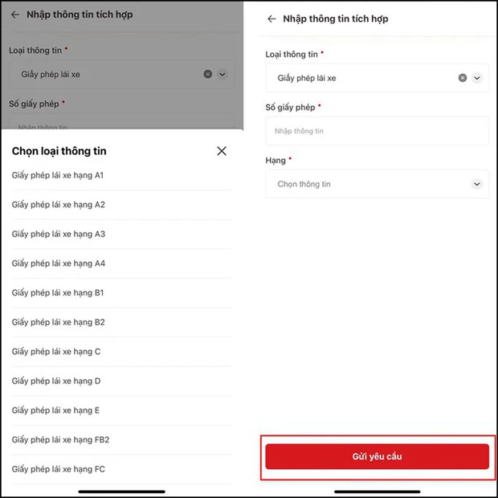

Hướng dẫn tích hợp giấy phép lái xe trên VNeID và cách xuất trình khi CSGT dừng xe kiểm tra
Từ ngày 15/9, người dân có thể dùng VNeID thay giấy tờ xe khi CSGT (cảnh sát giao thông) kiểm tra, nếu các cơ sở dữ liệu đã kết nối với hệ thống định danh và xác thực điện tử, xác định được thông tin về tình trạng giấy tờ.
Giấy phép lái xe (GPLX) là loại giấy tờ quan trọng khi ra đường nhưng trường hợp quên giấy tờ cũng không phải là hiếm gặp. Thế nên việc tích hợp thông tin vào ví giấy tờ trên VNeID mang đến nhiều lợi ích cho người sử dụng, nhất là khi cần xuất trình để CSGT (cảnh sát giao thông) kiểm tra.
Từ ngày 15/9, người dân có thể dùng VNeID thay giấy tờ xe khi CSGT (cảnh sát giao thông) kiểm tra, nếu các cơ sở dữ liệu đã kết nối với hệ thống định danh và xác thực điện tử, xác định được thông tin về tình trạng giấy tờ.
Dưới đây là các bước hướng dẫn đơn giản để người dân tích hợp GPLX vào ứng dụng VNeID:
Hướng dẫn tích hợp GPLX trên VNeID
Bước 1: Mở ứng dụng VNeID lên và đăng nhập vào tài khoả> Chọn Ví giấy tờ => Chọn Tích hợp thông tin.
Bước 2: Chọn Tạo mới yêu cầ> Chọn thông > Chọn mục Giấy phép lái xe.
Bước 2: Chọn Tạo mới yêu cầ> Chọn thông > Chọn mục Giấy phép lái xe.

Cách xuất trình GPLX trên VNeID khi CSGT dừng xe kiểm tra
Bước 1: Đăng nhập vào ứng dụng > Chọn Ví giấy tờ => Chọn Xuất trình giấy tờ.
Bước 2: Nhập > Chọn giấy phép lái > Nhấn Xác nhận.
Bước 3: Xem kết quả và xuất trình GPLX để CSGT kiểm tra.